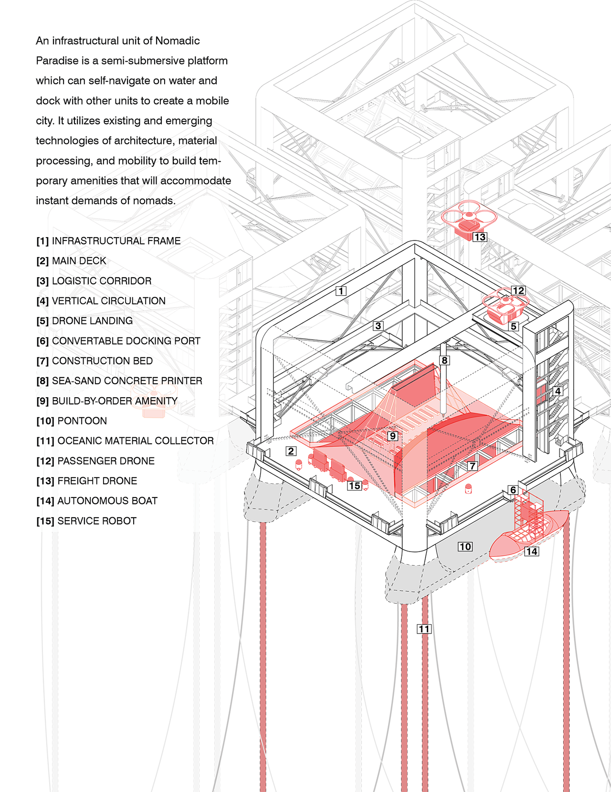
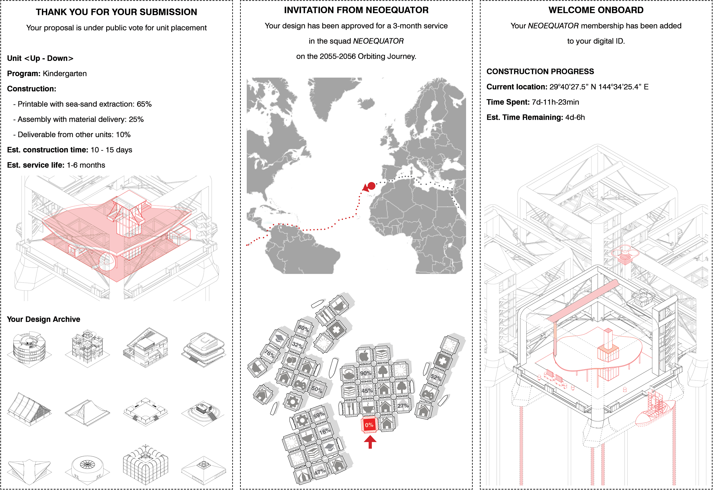
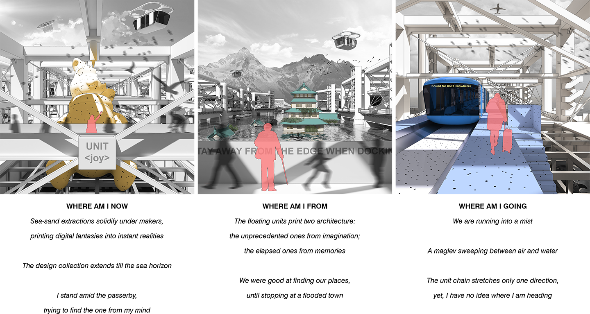
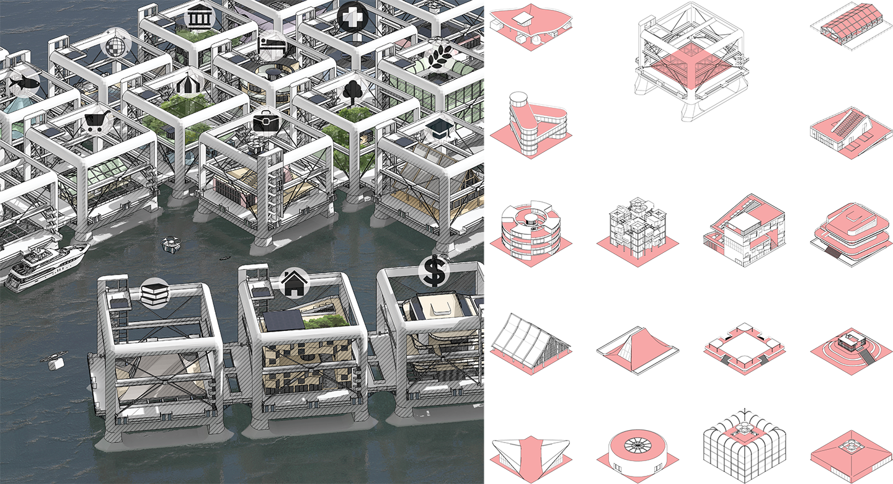

NOMADIC PARADISE
NOMADIC PARADISE is an aquatic infrastructure concept of robotic units equipped with sea-sand architectural printers. While roaming along coasts in a sea-level-rising world, the units are always on call to pick up aquatic nomads and merge into instant cities on an endless journey away from the next disasters. It may or may not be surprising that most of these units are printed and reprinted with structures for leisure and fun, as the nomads rather make themselves some last paradises than maintain hopes for returning home. The concept took shape in my 2019 course project (Sci-Fab MAS.S60) at MIT Media Lab, with inspirations from existing spatial typologies and emerging technologies in digital fabrication, material processing, and mobility [Supervisors:Joost Bonsen and Dan Novy, MIT Media Lab].

The fireworks at unit [celebration] have just announced the conclusion of my fifth year roaming between paradises. As New-Year-Eve gradually overwhelms
the reserved festivals we brought from our submerged homelands, I would like to cherish my terrestrial past and share it with our aquatic generations.
Kids who follow my history channel might know about the professional title ‘architect’ that made my career back on land, where designing and building for
others required exclusive knowledge and skillset. Even after AI and the arch-printing revolution, reading local context still made architects vital for a while
until the sea-rise came. When coastal cities flooded one after another, the digital generation saw perfect excuses to unchain from fixed residency and overturned
the term 'refugee' on their escape from floods. As a result, architecture became printed copies of digital wonderlands to be assembled, inhabited, and abandoned
by the nomadic population. After filling every piece of landscape with bizarre architectural wastes, we headed to the sea, building paradises with sea-sand prints
in which we all live today.
When I joined the infrastructural design team for paradise units, I vaguely realized that it could eventually bury my architectural career. After all, everyone here
can be an architect. A party lover can simply visualize an imaginative party scenario into a contribution statement and apply for unit placement. The rest are left to votes,
design algorithms, and the printers. Nobody cares if the proposed [party] unit would fit next to a [meditation] unit. Tomorrow, it will detach and dock to new neighbors for
the next parties. After a few weeks, it will be voted out, decomposed, and recycled to make room for a fish farm or collective housing. To my sense, paradise is becoming
an almighty architect through the interwoven data of ideas, conflicts, fears, and wonders. Its power and creativity are unimaginable from the perspective of a human architect
back on land. On the other hand, the paradise creates nothing but today. Here you can hardly trace anything from the memory of land, nor any concerns about the next stage
of sea-rise. Still, I wish my channel could encourage our aquatic generation to see through the past and futures, and be the best architects of ourselves.
Happy new year!



